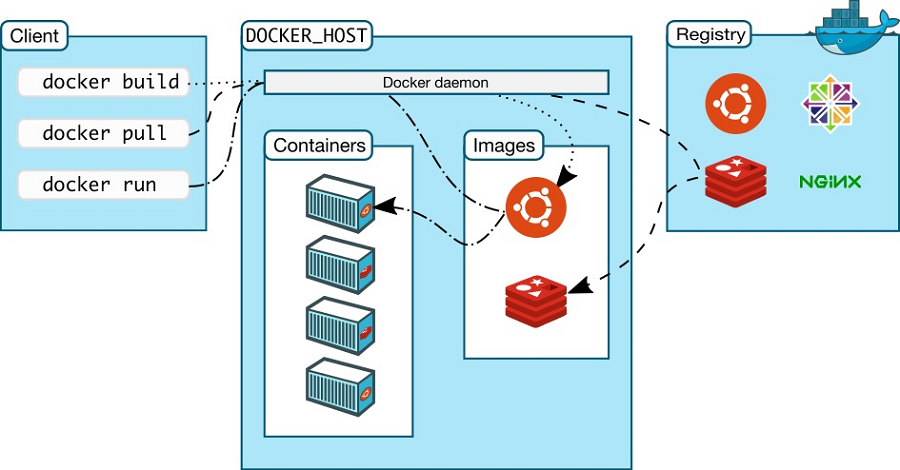
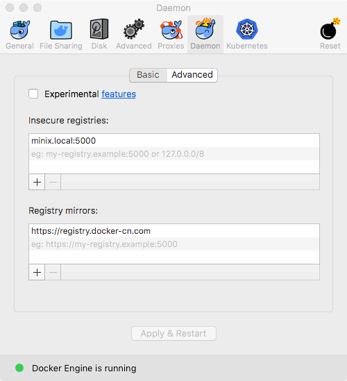

Docker 容器
Table of Contents
1 Docker
2 Docker 的系统架构
Docker 系统中包含容器（container）、图像（image）等常用概念。概念之间的联系见下图：

3 Docker 容器
容器是一个运行的实例，他是一个图像的运行实体。如果把图像比喻成数轴上点的话，容 器就是一个区间。
3.1 生命周期
docker create: 创建容器docker rename: 重命名容器docker run: 创建并启动容器,docker run是非常常用的一个命令其中比较有 用的选项如下：-t: 添加一个 tty 终端-d: 当容器退出后自动进行 detach 操作，该选项是常见的后台启动应用的方法--volume $HOSTDIR:$DOCKERDIR: 挂载容器外的磁盘--publish $HOSTPORT:$DOCKERPORT: 暴露端口--name: 制定容器名--restart: 重启策略，默认是 no ，即不重启。但是有一些后台服务需要跟着 docker 同时启动。这时需要将重启策略设置成 always
docker rm: 删除容器docker update: 更新容器运行的资源约束
3.2 启动和停止
docker start: 启动容器docker stop: 停止容器docker restart: 重启容器docker pause: 暂停容器docker unpause: 重启暂停的容器docker wait: 阻断直到容器停止docker kill: 发送 SIGKILL 信号到容器docker attach: 连接一个运行的容器
如果需要从一个终端中 detach ，使用 Ctrl+p, Ctrl+q 。如果需要重新 attache 到
终端，使用 docker attach 命令。
3.3 查看容器的状态
docker ps: 显示当前运行的容器，-a选项可以显示所有的容器docker logs: 显示容器的日志docker inspect: 查看所有容器的信息（包括 IP 地址）docker events: 获取容器的事件docker port: 获取发布的端口docker top: 显示容器中的进程docker stats: 显示容器资源的使用情况，--all显示所有的容器docker diff: 显示容器的修改的文件
3.4 杂项
docker cp: 在本地和容器之间复制文件-L: 保持源目标中的链接
docker export: 将文件系统导出成压缩文档，并输出到 STDOUTdocker exec: 在容器里面执行一个指令。例如可以用下面的命令进入容器里面， 启动一个 bash 交互环境。
docker exec -it foo /bin/bash
# 复制容器里的文件到主机 docker cp container:/source/path /host/path # 复制主机中的文件到容器 docker cp /host/path container:/source/path
3.5 使用容器中 Ubuntu 操作系统
下面是使用一些常用命令启动 Ubuntu 图像，并且 attache / detach 终端，具体见如 下：
➜ ~ docker ps -a CONTAINER ID IMAGE COMMAND CREATED STATUS PORTS NAMES ➜ ~ docker run -it --name=test ubuntu root@fde0a8727913:/# pwd / root@fde0a8727913:/# ls bin boot dev etc home lib lib64 media mnt opt proc root run sbin srv sys tmp usr var root@fde0a8727913:/# exit ➜ ~ docker ps CONTAINER ID IMAGE COMMAND CREATED STATUS PORTS NAMES ➜ ~ docker ps -a CONTAINER ID IMAGE COMMAND CREATED STATUS PORTS NAMES fde0a8727913 ubuntu "/bin/bash" 16 seconds ago Exited (0) 8 seconds ago test ➜ ~ docker attach test You cannot attach to a stopped container, start it first ➜ ~ docker start test test ➜ ~ docker ps CONTAINER ID IMAGE COMMAND CREATED STATUS PORTS NAMES fde0a8727913 ubuntu "/bin/bash" 54 seconds ago Up 1 second test ➜ ~ docker attach test root@fde0a8727913:/# ls bin boot dev etc home lib lib64 media mnt opt proc root run sbin srv sys tmp usr var root@fde0a8727913:/# rm -rvf /var/ removed directory '/var/opt' removed '/var/run' removed '/var/lock' ... removed directory '/var/cache' removed directory '/var/tmp' removed directory '/var/' root@fde0a8727913:/# exit ➜ ~ docker ps -a CONTAINER ID IMAGE COMMAND CREATED STATUS PORTS NAMES fde0a8727913 ubuntu "/bin/bash" About a minute ago Exited (0) 5 seconds ago test ➜ ~ docker diff test C /root A /root/.bash_history D /var ➜ ~ docker rm test test ➜ ~ docker ps -a CONTAINER ID IMAGE COMMAND CREATED STATUS PORTS NAMES ➜ ~
4 Docker 图像
Docker 图像指的是容器在一个特点时间点的快照，它是一个只读的容器的存储，官网上 说图像是容器的一个模板。
4.1 生命周期
docker images: 显示所有图像docker import: 通过压缩文档导入图像docker build: 通过 Dockerfile 创建图像docker commit: 通过一个容器来提交一个图像docker rmi: 移除一个图像docker load: 通过压缩档案作为 STDIN 来导入图像，图像的标签也会一并导入docker save: 将图像压缩成压缩档案输出到 STDOUT，图像的 layer, tags, version 一并输出
4.2 显示状态
docker history: 显示所有历史图像docker tag: 重命名图像，打标签等操作
4.3 常用命令
# 删除 tag 为 <none> 的图像 docker images | awk '$2 == "<none>" {print $3}' | xargs -I {} docker rmi {}
5 工作流
5.1 load/save 图像
加载文件中的图像
docker load < filename.tar.gz
保存图像到文件
docker save imagename:tagname | gzip > filename.tar.gz
5.2 import/export 容器
从一个容器文件中导入容器
cat filename.tar.gz | docker import - imagename:tagname
导出一个容器
docker export containername | gzip > filename.tar.gz
值得一提的是： load 在新建图像时会带着相关的历史信息，tag 等，而 import
只会创建一个图像，所以 import 的图像的大小会小一点。
5.3 添加当前用户到 docker 组
- 添加 docker 的用户组，
sudo groupadd docker - 将当前用户加到 docker 组中，
sudo usermod -aG docker $USER - 重启机器或者使用
newgrp docker命令使修改生效
6 Registry 和 Repository
registry 是一个宿主机器，一个 registry 包含多个 repository。repository 是存储 图像的仓库，一个 repository 包含多个 image，同时每个 image 又有许多 tag。常见 的操作如下：
docker login: 登入 registrydocker logout: 注销 registrydocker search: 搜索图像docker pull: 拉取 registry 的图像docker push: 上传本地图像到 registry
6.1 上传图像到私有仓库
在上传或下载私有仓库的图像时，需要提前设置安全性。通常 docker 私有仓库默认采 用 HTTPS，如果不设置安全性则会出现如下错误：
➜ ~ docker tag ubuntu:18.04 192.168.1.2:5000/ubuntu:18.04 ➜ ~ docker push 192.168.1.2:5000/ubuntu:18.04 The push refers to repository [192.168.1.2:5000/ubuntu] Get https://192.168.1.2:5000/v2/: http: server gave HTTP response to HTTPS client
配置文件一般是 daemon.json ，所存放的位置因操作系统而异，具体如下：
- Mac:
~/.docker/daemon.json - Linux:
/etc/docker/daemon.json
需要添加 insecure-registries 的值，然后重启 docker 生效。
{
"insecure-registries" : [
"192.168.1.2:5000"
],
"registry-mirrors" : [
"https://registry.docker-cn.com"
]
}
Mac 操作系统也可以直接通过界面设置，如下图所示：

> docker tag imagename 192.168.1.2:5000/imagename > docker push 192.168.1.2:5000/imagename The push refers to repository [192.168.1.2:5000/redis] f37e5c653360: Pushed 031c196d6ffa: Pushed 215555938ee1: Pushed 2ea66b75bc32: Pushed bf0b6dc2d2d7: Pushed cfce7a8ae632: Pushed lastest: digest: sha256:9b1b75fa6364b2ec538a5efdb00c3511adee5b6b2f80d5c64b06c4456ad573f6 size: 1571
6.2 开启私有仓库允许删除图像的接口
registry 默认不允许删除已经上传的图像，可以通过以下设置来开启允许删除的配置
# 查看默认配置 docker exec -it registry sh -c 'cat /etc/docker/registry/config.yml' # 开启删除的配置项 (添加 delete: enabled: true) docker exec -it registry sh -c "sed -i '/storage:/a\ delete:' /etc/docker/registry/config.yml" docker exec -it registry sh -c "sed -i '/delete:/a\ enabled: true' /etc/docker/registry/config.yml" # 重启以生效 docker restart registry
6.3 私有仓库中的 API 接口
添加一些别名帮助查询远端的仓库内容，添加远端仓库的环境变量
export REGISTRY=localhost:5000
6.3.1 Registry 的 API 接口
# 查询 registry 中所有的 repository curl -s -XGET "http://${REGISTRY}/v2/_catalog" # 查询 repository 的所有 tag curl -s -XGET "http://${REGISTRY}/v2/<repo>/tags/list" # 删除 registry 中的 repository 的 tag # 先获取 tag 的 digest curl --header "Accept: application/vnd.docker.distribution.manifest.v2+json" \ -I -s -XGET "http://${REGISTRY}/v2/<repo>/manifests/<tag>" | \ sed '/^Docker-Content-Digest:/!d;s/^Docker-Content-Digest: \(.*\)$/\1/' # 然后通过 digest 删除 tag curl -s -I -XDELETE "http://${REGISTRY}/v2/<repo>/manifests/<digest>" # 删除后需要垃圾回收才会真正删除 blob 对象 docker exec -it registry bin/registry garbage-collect /etc/docker/registry/config.yml
添加以下帮助脚本
# list repositories dkrepos() { curl -s -XGET "http://${REGISTRY}/v2/_catalog" } # list tags dktags() { local repo=$1 curl -s -XGET "http://${REGISTRY}/v2/${repo}/tags/list" } # remove tag dkrmt() { local repo=$1 local tag=$2 local header="Accept: application/vnd.docker.distribution.manifest.v2+json" local url="http://${REGISTRY}/v2/${repo}/manifests/${tag}" local digest=$(curl -sI -H ${header} -XGET ${url%$'\r'} | sed '/^Docker-Content-Digest:/!d;s/^.*: \(.*\)$/\1/') local url2="http://${REGISTRY}/v2/${repo}/manifests/${digest}" }
7 编写 Dockerfile
Dockerfile 是配置 Docker 容器的配置文件，最佳实践参考这里 。
7.1 Dockerfile 的指令
常见的指令如下表:
| Instruction | 描述 |
|---|---|
| FROM | 设置基的图像 |
| RUN | 在新的层数执行一条命令，并且提交结果 |
| CMD | 提供默认执行的容器 |
| EXPOSE | 暴露容器的监听端口， 这条指令只是提供端口，并不会直接暴露 |
| ENV | 设置环境变量 |
| ADD | 从容器外复制文件和目录到容器里面，避免使用 ADD，尽量使用 COPY |
| COPY | 使用 root 权限来复制文件 |
| ENTRYPOINT | 配置容器是入口可执行文件 |
| VOLUME | 配置一个可挂载的点 |
| USER | 设置 RUN/CMD/ENTRYPOINT 的执行用户 |
| WORKDIR | 设置工作目录 |
| ARG | 设置 build 的命令行参数 |
| ONBUILD | 添加一个当容器作为别的基容器是的触发命令 |
| STOPSIGNAL | 设置系统退出的信号 |
| LABEL | 添加 key/value 属性，如：images, container, daemon |
7.2 通过 docker build 创建图像
FROM openjdk:8 LABEL appname="myapp" version="0.0.1" author="Jinghui Hu" COPY target/myapp-0.0.1.jar /app/myapp.jar WORKDIR /app EXPOSE 9001 VOLUME /app/log CMD java -jar myapp.jar
使用 docker build 命令来新建图像
docker build -t myapp .